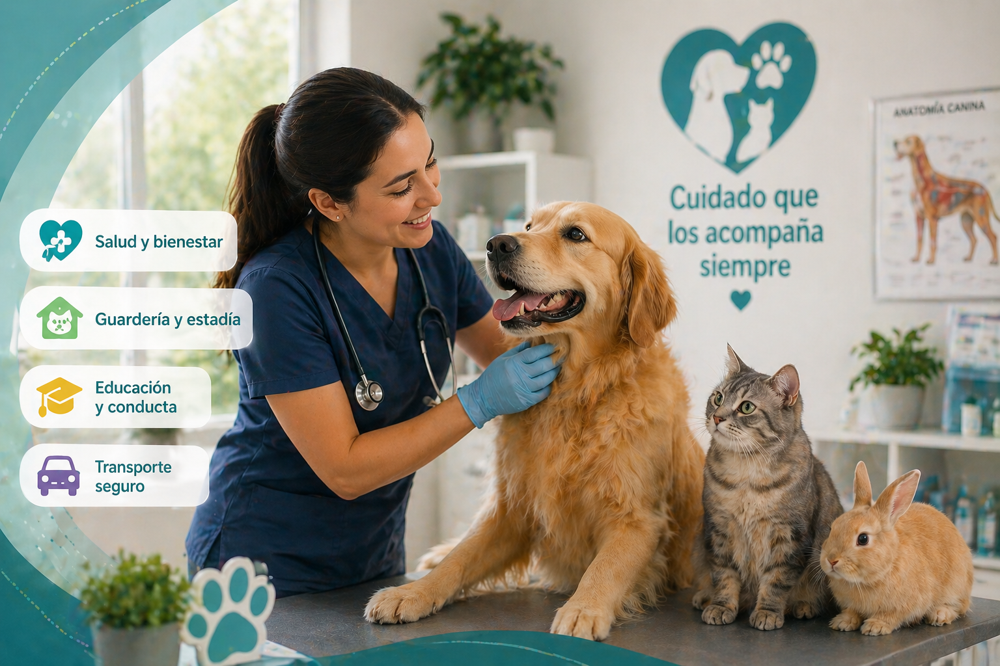
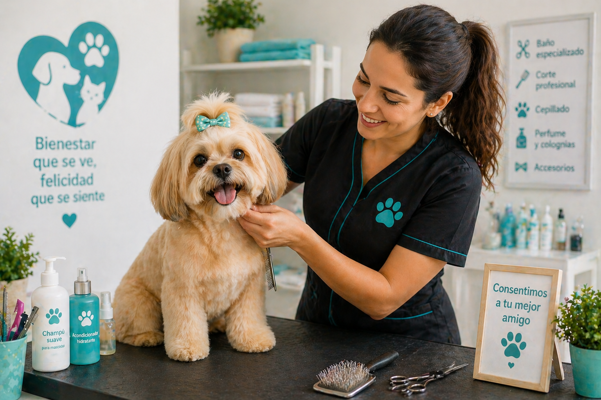
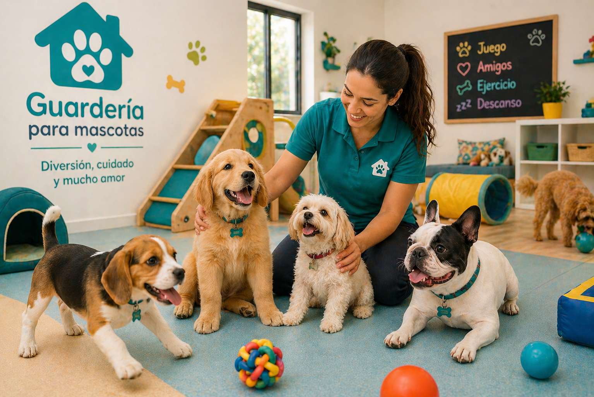
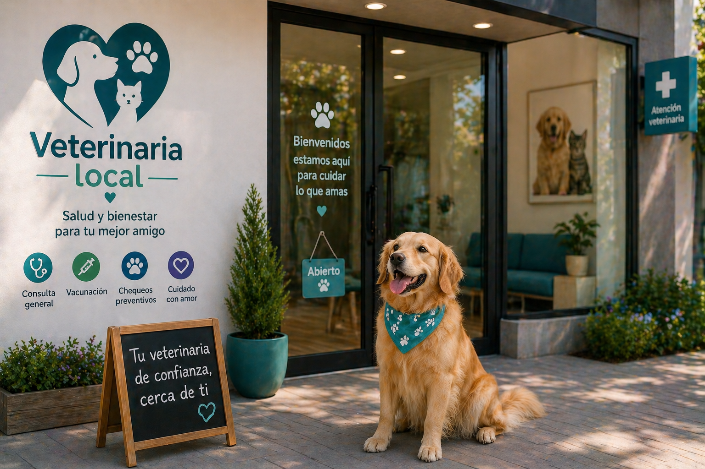

Consulta veterinaria
Atención médica básica, orientación profesional, revisión general y seguimiento.
Ver opcionesConecta con veterinarias, peluquerías, guarderías y profesionales cercanos. Consulta servicios, compara opciones y agenda citas de forma sencilla.

Una experiencia centralizada para encontrar servicios de salud, cuidado, higiene y estadía.
Atención médica básica, orientación profesional, revisión general y seguimiento.
Ver opciones
Baño, corte, limpieza, higiene y servicios estéticos para mascotas comunes.
Ver opciones
Cuidado temporal, acompañamiento y espacios seguros durante el día o por estadía.
Ver opcionesFiltra por tipo de servicio, ubicación, disponibilidad y valoración.
Consulta perfiles, horarios, servicios ofrecidos y datos relevantes.
Selecciona fecha, hora, servicio y profesional disponible.

Consulta general, vacunación, controles y exámenes básicos.
A 1.2 km · Zona localBaño, corte, limpieza de oídos y cuidado estético.
A 800 m · Zona localPublica tus servicios, organiza tu agenda y facilita que nuevos clientes te encuentren.